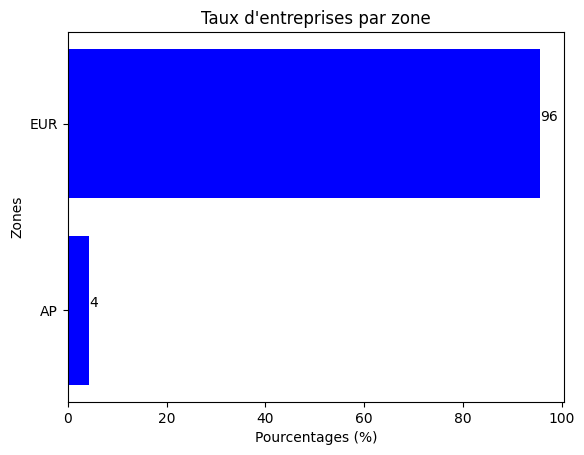
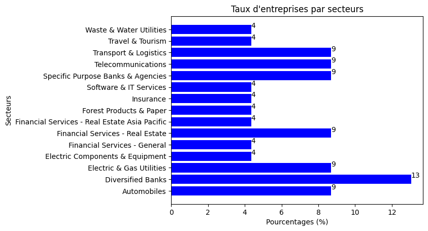

Afficher le code
import pandas as pd
import matplotlib.pyplot as plt
import seaborn as sns
import numpy as npEtape1: Exclusion normatives et sectorielle - Exclusion des entreprises non signataires de l’UNGC ou ne respectant pas l’UNGC - Exclusion des entreprises pratiquant des activités controversées
Etape2: Intégration des critères ESG - Identification des entreprises du CAC40 ESG et des notes E, S et G y afférentes - Détermination des médianes des notes E, S et G de ces entreprises. Celles-ci constituerons des benchmarks - Filtrer parmi les entreprises retenues à l’étape 1, celles dont les scores E, S et G sont supérieurs aux benchmarks
Requirement already satisfied: openpyxl in d:\deb\ensai\cours3a\11. asset management\lab\script\.venv\lib\site-packages (3.1.5)
Requirement already satisfied: et-xmlfile in d:\deb\ensai\cours3a\11. asset management\lab\script\.venv\lib\site-packages (from openpyxl) (2.0.0)
[notice] A new release of pip is available: 25.0 -> 25.0.1
[notice] To update, run: python.exe -m pip install --upgrade pipNombre d'entreprises restantes: 4880un_global = pd.read_excel('UN Global Compact.xlsx')
un_global = un_global[(un_global["Signataire de l\'UNGC"]=="Oui")&(un_global["Non-Respect de l\'UNGC"]=="Non")]
univers = univers.merge(un_global[["ISIN"]], on="ISIN", how="inner")
print("Nombre d'entreprises restantes:\t",len(univers["ISIN"].unique()))Nombre d'entreprises restantes: 1119controverse = ['Alcool',
'Activités nuisant au bienêtre animal (tests, fourrure, etc)',
'Produits chimiques controversés',
"Jeux d'argents et de hasard",
'Organismes genertiquement modifiés',
'Prêts usuriers',
'Energie Nucléaire',
'Divertissements pour Adultes',
'Medecine reproductive',
'Tabac',
'Energies fossiles (Overall)',
'Charbon',
'Fossile non conventionnel',
'Armes à feu civiles',
'Matériel Militaire',
'Armement controversé (Armes de destruction massive)']Qu’est-ce que le CAC 40 ESG ? En 2021, Euronext a annoncé le lancement du CAC 40 ESG, conçu pour identifier les 40 entreprises du CAC Large 60 présentant les meilleures pratiques en matière de critères ESG. Le CAC 40 ESG est devenu ainsi le premier indice ESG national d’Euronext. En partenariat avec Vigeo Eiris (V.E), une filiale de Moody’s, Euronext a évalué les pratiques ESG des entreprises pour composer cet indice (une note sur 100 sur 38 critères, méthodologie à retrouver ici). La méthodologie de l’indice est alignée avec le label ISR français et les principes du Pacte Mondial des Nations Unies, incluant des critères de classement relatifs “Best-in-class”. Cela veut dire que les entreprises ayant les meilleurs scores parmi le CAC Large 60 sont sélectionnées, sans que ces secteurs n’aient forcément de contribution directe à la transition. Ensuite, les filtres d’exclusions sont appliqués. Concrètement, les entreprises impliquées dans le charbon (+5% d’activités dans les énergies fossiles), les armes controversées ou le tabac (+10% de l’activité) sont exclues, pour donner quelques exemples.
https://blog.goodvest.fr/articles/le-cac-40-esg-un-pas-vers-linvestissement-durable
Nombre d'entreprises restantes: 23| ESG ENV | ESG SOCscore | ESG GOV | Global | |
|---|---|---|---|---|
| count | 23.000000 | 23.000000 | 23.000000 | 23.000000 |
| mean | 73.217391 | 67.913043 | 66.043478 | 68.347826 |
| std | 6.775333 | 5.509604 | 6.108699 | 3.549759 |
| min | 65.000000 | 61.000000 | 58.000000 | 61.000000 |
| 25% | 67.000000 | 63.500000 | 60.500000 | 66.000000 |
| 50% | 72.000000 | 67.000000 | 65.000000 | 68.000000 |
| 75% | 77.500000 | 72.000000 | 71.000000 | 70.000000 |
| max | 91.000000 | 80.000000 | 77.000000 | 76.000000 |
nombre_entreprises_par_zone = univers.groupby('Country')['Title'].count().reset_index(name='NombreEntreprises')
# Calcul du taux d'entreprises par zone d'activité
nombre_total_entreprises = nombre_entreprises_par_zone['NombreEntreprises'].sum()
nombre_entreprises_par_zone['TauxEntreprises'] = nombre_entreprises_par_zone['NombreEntreprises'] / nombre_total_entreprises
# Afficher le résultat
print(nombre_entreprises_par_zone) Country NombreEntreprises TauxEntreprises
0 Australia 1 0.043478
1 Finland 1 0.043478
2 France 12 0.521739
3 Germany 1 0.043478
4 Italy 3 0.130435
5 Netherlands 2 0.086957
6 Spain 3 0.130435| ISIN | Bloomberg Ticker | Title | Sector zone | Country | Zone | ESG ENV | ESG SOCscore | ESG GOV | Global | |
|---|---|---|---|---|---|---|---|---|---|---|
| 6 | NL0011540547 | ABN | Abn Amro Bank | Diversified Banks | Netherlands | EUR | 76 | 67 | 58 | 66 |
| 15 | FR0010340141 | ADP | Aeroports de Paris | Transport & Logistics | France | EUR | 77 | 64 | 59 | 64 |
| 19 | XS1046325640 | NaN | Agence Francaise de Developpement | Specific Purpose Banks & Agencies | France | EUR | 67 | 80 | 70 | 74 |
| 38 | FR0004125920 | AMUN | Amundi | Financial Services - General | France | EUR | 82 | 70 | 63 | 70 |
| 71 | FR0000120628 | CS | Axa | Insurance | France | EUR | 81 | 63 | 72 | 69 |
nombre_entreprises_par_secteur = univers.groupby('Sector zone')['Title'].count().reset_index(name='NombreEntreprises')
# Calcul du taux d'entreprises par zone d'activité
nombre_total_entreprises = nombre_entreprises_par_secteur['NombreEntreprises'].sum()
nombre_entreprises_par_secteur['TauxEntreprises'] = nombre_entreprises_par_secteur['NombreEntreprises'] / nombre_total_entreprises
# Afficher le résultat
print(nombre_entreprises_par_secteur) Sector zone NombreEntreprises \
0 Automobiles 2
1 Diversified Banks 3
2 Electric & Gas Utilities 2
3 Electric Components & Equipment 1
4 Financial Services - General 1
5 Financial Services - Real Estate 2
6 Financial Services - Real Estate Asia Pacific 1
7 Forest Products & Paper 1
8 Insurance 1
9 Software & IT Services 1
10 Specific Purpose Banks & Agencies 2
11 Telecommunications 2
12 Transport & Logistics 2
13 Travel & Tourism 1
14 Waste & Water Utilities 1
TauxEntreprises
0 0.086957
1 0.130435
2 0.086957
3 0.043478
4 0.043478
5 0.086957
6 0.043478
7 0.043478
8 0.043478
9 0.043478
10 0.086957
11 0.086957
12 0.086957
13 0.043478
14 0.043478 6 EUR
15 EUR
19 EUR
38 EUR
71 EUR
117 EUR
172 EUR
175 EUR
201 EUR
333 EUR
389 EUR
438 EUR
539 EUR
558 EUR
616 EUR
632 EUR
633 EUR
658 EUR
661 EUR
691 EUR
706 EUR
740 EUR
741 AP
Name: Zone, dtype: objectnombre_entreprises_par_zone = univers.groupby('Zone')['Title'].count().reset_index(name='NombreEntreprises')
# Calcul du taux d'entreprises par zone d'activité
nombre_total_entreprises = nombre_entreprises_par_zone['NombreEntreprises'].sum()
nombre_entreprises_par_zone['TauxEntreprises'] = nombre_entreprises_par_zone['NombreEntreprises'] / nombre_total_entreprises
# Afficher le résultat
print(nombre_entreprises_par_zone) Zone NombreEntreprises TauxEntreprises
0 AP 1 0.043478
1 EUR 22 0.956522# Create a bar plot
plt.barh(nombre_entreprises_par_zone['Zone'], nombre_entreprises_par_zone['TauxEntreprises']*100, color='blue')
for index, value in enumerate(nombre_entreprises_par_zone['TauxEntreprises']*100):
plt.text( value,index, str(round(value)), ha='left', va='bottom')
# Add labels and title
plt.ylabel('Zones')
plt.xlabel('Pourcentages (%)')
plt.title('Taux d\'entreprises par zone')
plt.show()
plt.barh(nombre_entreprises_par_secteur['Sector zone'], nombre_entreprises_par_secteur['TauxEntreprises']*100, color='blue')
for index, value in enumerate(nombre_entreprises_par_secteur['TauxEntreprises']*100):
plt.text( value,index, str(round(value)), ha='left', va='bottom')
# Add labels and title
plt.ylabel('Secteurs')
plt.xlabel('Pourcentages (%)')
plt.title('Taux d\'entreprises par secteurs')
plt.show()
6 Abn Amro Bank
15 Aeroports de Paris
19 Agence Francaise de Developpement
38 Amundi
71 Axa
117 Caisse des Dépôts
172 Cooperatieve Rabobank
175 Covivio
201 Deutsche Telekom
333 Indra Sistemas
389 La Poste
438 Michelin
539 Pirelli & C
558 Red Electrica
616 Siemens Gamesa Renewable Energy
632 SNCF
633 Societe Generale
658 Stora Enso
661 Suez
691 Telecom Italia
706 Terna
740 Unibail-Rodamco-Westfield
741 Unibail-Rodamco-Westfield (Australia)
Name: Title, dtype: object| Title | ponderation | |
|---|---|---|
| 389 | La Poste | 4.834606 |
| 632 | SNCF | 4.707379 |
| 19 | Agence Francaise de Developpement | 4.707379 |
| 117 | Caisse des Dépôts | 4.580153 |
| 175 | Covivio | 4.516539 |
| 38 | Amundi | 4.452926 |
| 661 | Suez | 4.452926 |
| 741 | Unibail-Rodamco-Westfield (Australia) | 4.389313 |
| 71 | Axa | 4.389313 |
| 740 | Unibail-Rodamco-Westfield | 4.389313 |
| 706 | Terna | 4.325700 |
| 658 | Stora Enso | 4.325700 |
| 633 | Societe Generale | 4.325700 |
| 438 | Michelin | 4.325700 |
| 616 | Siemens Gamesa Renewable Energy | 4.262087 |
| 558 | Red Electrica | 4.262087 |
| 539 | Pirelli & C | 4.198473 |
| 691 | Telecom Italia | 4.198473 |
| 172 | Cooperatieve Rabobank | 4.198473 |
| 6 | Abn Amro Bank | 4.198473 |
| 15 | Aeroports de Paris | 4.071247 |
| 201 | Deutsche Telekom | 4.007634 |
| 333 | Indra Sistemas | 3.880407 |
Quantitative Risk Analysis • Stochastic Modelling • Asset Pricing • Climate Analytics